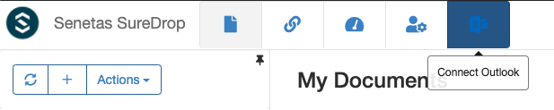
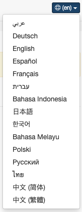
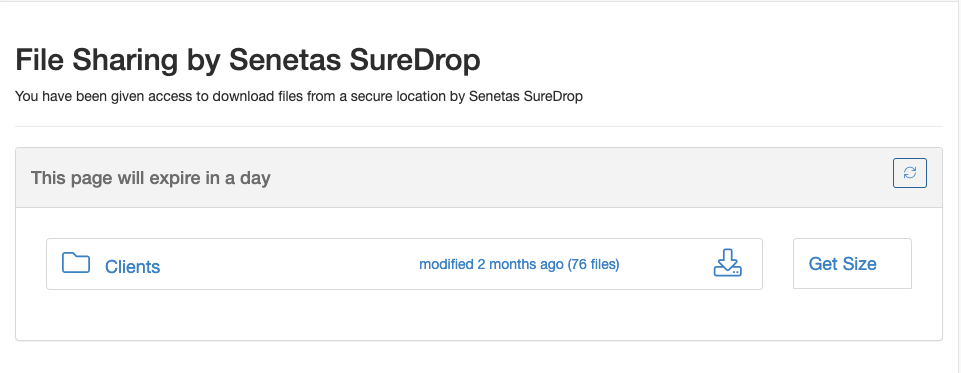
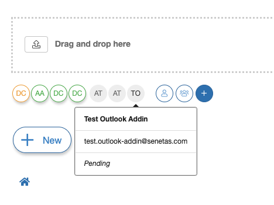
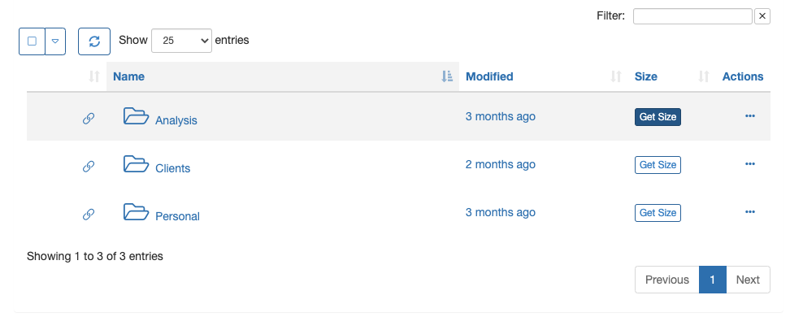
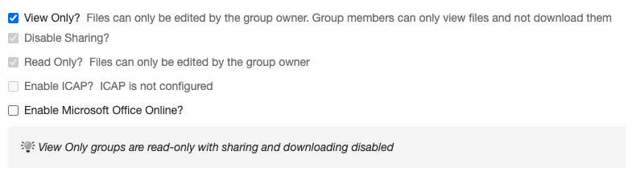

Version 2.11.0-certified
Welcome to the September 2020 release of SureDrop version 2.11.0-certified
There are a number of updates in this version that we hope you will like, along with making intangible security changes and minor bug fixes, these are the new features implemented in this version:
Shareable links - users are now able to share publicly accessible links to files and folders.
Outlook integration - SureDrop add-in for Outlook allows you share links and save attachments directly from Outlook to SureDrop.
Ρусский - SureDrop i18n now includes Russian.
Download as zip - users can now download files and folders as a zip archive on the fly.
Notifications with message - we are now able to add a custom message to SureDrop notification.
Group membership badge - pending users are displayed in the UI as inactive members of the group.
Changes to MFA - administrators can now view, filter and sort users based on MFA.
Folder size - users can now view a folder size on demand.
Restricted users - do not have access to a
My Documentsgroup.
Important
Please run the following command to download the latest install script:
wget "https://s3-ap-southeast-2.amazonaws.com/suredrop-downloads/compose/create-suredrop.bat" -outfile "create-suredrop.bat"
Features / enhancements implemented
Outlook integration
We have now created an add-in that integrates SureDrop with Microsoft Outlook. By connecting the SureDrop add-in to your Outlook account, you can:
Replace email attachments with a shared link to any file, big or small
Save email attachments that you receive directly to your SureDrop account
The details of connecting Outlook with SureDrop can be found in the SureDrop for Outlook page.
SureDrop in Russian
Our i18n is now extended to support Russian locale. That means we now officially support the following lanugages -
Download as zip
SureDrop files and folders can now be downloaded as a zip archive on-the-fly. That means the archive is created on-demand totally asynchronously and does not buffer any intermediate files in memory. It is a completely transparent operation to the end user and provides the ability to share folders including sub-folders, a much awaited feature in SureDrop.
Notifications with message
We can now include a note / message along with the Notify Selected and Notify All operations. This was a feature
request to standardise adhoc sharing and notification workflows.
Group membership badge
When a user yet to activate his SureDrop account is added to a group, his membership is shown in the GUI as an inactive badge. The user details can be viewed as a tooltip on hover.
Changes to MFA
SureDrop multi-factor authentication has now been restricted local users only. All external (federated) users will manage their MFA with the respective identity provider (Azure, LDAP or STA).
SureDrop administrators can now view, filter and sort users based on their MFA.
Turning on MFA company wide now prompts the administrators about resetting local user accounts which don’t have MFA turned on.
Folder size
Users can now view folder sizes on demand by clicking the Get Size button. The functionality has been extended
to folders shown in documents, links and adhoc sharing pages.

Restricted users
With the advent of zipping files on-the-fly, we have removed the
My Documentsgroup for restricted users. The only reason for that group to exist for restricted users, was to act as a destination for zipped files. This is no longer required.The link and shares page looks a bit different for restricted users. They are not authorised to view sent links and shares.
Minor Releases
Version 2.11.1 - 21st September 2020
Downloading folder (cloud) - There was a configuration error in the Canberra region of our SaaS instance. This leads to failure in downloading folders.
Outlook addin documentation - The link in the Connect Outlook dialog in SureDrop, now points at How to install the SureDrop add-in for Outlook.
Version 2.11.2 - 22nd September 2020
Get Link using Safari - we have had to change some code to support
Get Linkoperation in Safari.Icon sizes - we have slightly modified the icons in file and folder view to standardise it with other pages.
Changing language on adhoc sharing page - was redirecting the user to the login page.
Sharing password - using the browser’s auto-fill functionality for email addresses, was also populating the password field as well.
Version 2.11.3 - 29th September 2020
Get Link using Safari - More minor changes to support Safari and the clipboard.
Sharing View - In some cases files were not shown in the
Share Viewunless the user selected theFile Viewthen went back to theShare View.File Name Truncated in File View - Long file names were truncated in the
File View. Filenames now use the full column width and show in the tooltip.
Version 2.11.4 - 1st October 2020
Branding Message - Added the ability to add a branding message on the login screen. Administrators can customise the message from the Admin -> General Settings page.
Version 2.11.5 - 2nd October 2020
Updated Language Translations - Updated some missing language translations.
Settings Bug - Resolved issue where all of the settings were not being returned in all cases via the
settingsAPI.
Version 2.11.6 - 10th December 2020
A maintenance release (For non-production use only)
Version 2.11.7 - 21st December 2020
View-only groups - We have added a new policy in the edit group dialog which allows the group owner (or an administrator) to set a security group as view-only. In a view-only security group files can only be uploaded by the group owner. Group members can only view files and not download them. Thus by definition, view only groups are read-only with sharing disabled.
Sandbox viewer - SureDrop users now have the ability to view more than 140 file types natively within the browser. This much awaited capability coupled with view-only groups, tightens the security model for organisations with sensitive documents. To prevent users from taking screenshots or photos of their screen, the documents are rendered in the browser page-by-page as images with a watermark containing company name, time-stamp and user name of the viewer. Users can click on the rendered image to get to advance viewing options such as rotating, zooming, or flipping the image.
Client fingerprinting - SureDrop client sessions have been fingerprinted for authentication and authorisation at the server. This means that the session token for each session is locked to a single client IP address and client agent string and it is not possible to copy the URL of an authenticated session and paste it in another browser. Users will need to reauthenticate themselves if the fingerprinting fails at the server side. Albeit some may consider this a hindrance to usability, we believe it is a necessary enhancement to our security model.
Retry failed uploads - Uploads that have failed will now retry every minute automatically. This means that for those large uploads where a single slice fails, you will no longer need to manually click on the retry button for that slice.
Opera - is now supported, taking our list of supported browsers to:
Safari
Firefox
Chrome
Edge
Opera
Version 2.11.7 (SP8) - 26th March 2021
SP8 - Latest culmative service pack update.
Security and Stability fixes - Minor security and stability fixes.
Hyper-v requirement removal - Removal for the requirement to install hyper-v for 2019 installs
Version 2.11.7 (SP9) - 20th April 2021
SP9 - Latest culmative service pack update.
Security and Stability fixes - Minor security and stability fixes.
Performamce improvements - Allowing static HTML and CSS files to be cached.
Login issue - In some cases entering the company name last after the username and password, failed to allow the instance enough time to detect the correct region, causing a login failure.
Version 2.11.7 (SP12) - 4th June 2021
SP12 - Latest culmative service pack update.
Security and Stability fixes - Minor security and stability fixes.
Cosmetic changes to the login page - Cosmetic changes to the login page
Version 2.11.7 (SP14) - 16th July 2021
SP14 - Latest culmative service pack update.
Security and Stability fixes - Minor security and stability fixes.
Office365 integration fix - In some cases attempting to open an office365 document raised an error
Version 2.11.7 (SP15) - 19th July 2021
SP15 - Latest culmative service pack update.
Security and Stability fixes - Minor security and stability fixes.
Version 2.11.7 (SP18) - 30th Aug 2021
SP18 - Latest culmative service pack update.
Security and Stability fixes - Minor security and stability fixes.